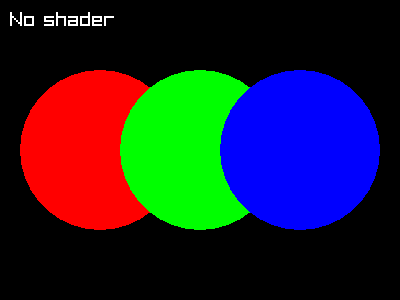

Shaders are small programs that run on the GPU and control how things are drawn. A vertex shader determines where vertices appear on screen, and a fragment shader determines the color of each pixel. raylibr lets you load custom GLSL shaders to create visual effects.
Loading shaders
Load shaders from files or from strings in memory:
# From files
shader <- load_shader("vertex.glsl", "fragment.glsl")
# Pass NULL for either to use Raylib's default
shader <- load_shader(NULL, "my_effect.glsl")
# From strings
fs_code <- "
#version 330
in vec2 fragTexCoord;
in vec4 fragColor;
out vec4 finalColor;
uniform sampler2D texture0;
void main() {
vec4 color = texture(texture0, fragTexCoord) * fragColor;
float gray = dot(color.rgb, vec3(0.299, 0.587, 0.114));
finalColor = vec4(gray, gray, gray, color.a);
}
"
shader <- load_shader_from_memory(NULL, fs_code)Using shaders
Wrap your drawing calls in begin_shader_mode() /
end_shader_mode():
begin_shader_mode(shader)
draw_texture(my_texture, 0L, 0L, "white")
end_shader_mode()Everything drawn between these calls uses the custom shader instead of the default rendering.
Uniforms
Pass data from R to the shader via uniforms — named variables in the GLSL code:
loc <- get_shader_location(shader, "intensity")
set_shader_value(shader, loc, 0.5) # float
set_shader_value(shader, loc, c(1.0, 0.5)) # vec2
set_shader_value(shader, loc, c(1, 0, 0)) # vec3
set_shader_value(shader, loc, c(1, 0, 0, 1)) # vec4set_shader_value() automatically picks the right GLSL
type based on the length of the R vector.
For matrices, use set_shader_value_matrix(). For
textures, use set_shader_value_texture().
Post-processing pattern
The most common shader use case is post-processing: render the scene normally to an off-screen texture, then draw that texture to the screen through a shader.
# Setup
target <- load_render_texture(400L, 300L)
shader <- load_shader(NULL, "my_effect.glsl")
source_rec <- rectangle(0, 0, 400, -300) # flipped Y for render texture
# In the game loop:
begin_texture_mode(target)
clear_background("black")
# ... draw your scene normally ...
end_texture_mode()
begin_drawing()
begin_shader_mode(shader)
draw_texture_rec(target$texture, source_rec, c(0, 0), "white")
end_shader_mode()
end_drawing()Note the negative height in the source rectangle — render textures are vertically flipped in OpenGL.
Example
Without a shader, a scene with colored circles looks like this:
raylibr_screenshot(function() {
draw_circle(100L, 150L, 80.0, "red")
draw_circle(200L, 150L, 80.0, "green")
draw_circle(300L, 150L, 80.0, "blue")
draw_text("No shader", 10L, 10L, 20L, "white")
})
A grayscale fragment shader would convert this to shades of gray by
computing a weighted luminance from the RGB channels. The GLSL code uses
the standard luminance weights (0.299, 0.587, 0.114) to
match human perception.
Further reading
See these demos for more advanced shader usage:
- Shader Stars — animated GLSL fragment shader with uniform updates each frame
- Julia Sets — fractal rendering with mouse-driven zoom via shader uniforms